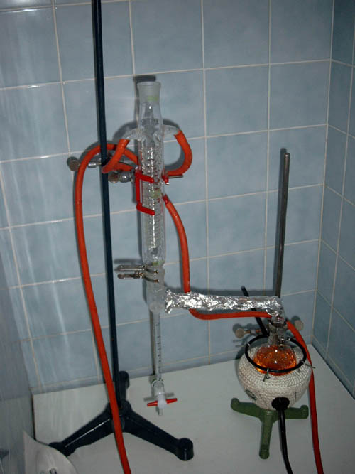
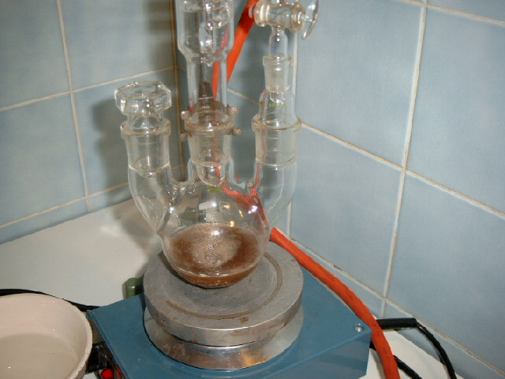
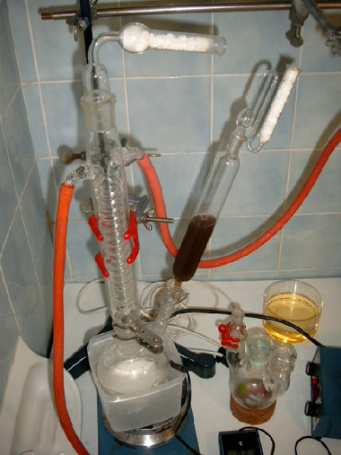

|
PCP via Enamine Intermediate
by Xicori
[ Back to
the Chemistry Archive ]
After a few trials on PCP-Synthesis via the N-Benzoylpiperidine route
(they have all failed, if someone wants details, let me know), Swim has
performed a PCP synthesis via the enamine route. The whole synthesis was
illustrated with pictures, so that other bees get a easy to follow writeup…
Here we go:
Step 1: N-piperidin-cyclohexene
Into a 250ml RBF with a Dean Stark water-trap, a Dimroth reflux condensor and
some boiling stones there were added 39,6ml of Piperidine, 34,5ml of
cyclohexanone, 500mg of p-Toluene-sulfonic-acid and 100ml Toluene as solvent.
The mixture was heated with a heating mantle until all water had seperated
(~5,4ml). Heating was stopped, and after the contents had cooled down the
reaction mixture was washed with ~30ml of water to remove the catalyst acid. The
organic phase was seperated, dried over Na2SO4 and distilled under aspirator
vacuum to yield 45g of colourless, nearly smellless enamine. (b.p. ~
108°C@good aspirator vacuum)

Apparatus for azeotropic removal of water
2) Reaction Mixture
3) water in the dean stark receiver
4) Apparatus for vacuum distillation of the reaction
contents
5) distilled, nearly pure enamine in the recveiver
Note:
Piperidine is corrossive, toxic, and has a very unpleasent amine smell –
avoid spilling it -> use a syringe!
Step 2: Removal of water from p-Toluene sulfonic acid Monohydrate
0,1mole (19g) of p-Toluene sulfonic acid Monohydrate were added to 40ml of
Toluene, and heated under a Dean stark trap, until no more water seperated,
and the distillate was completely clear. Theoretically water amount: 1,8ml
6) Apparatus
7) boiling mixture
Notes: At first 2 Layers are formed – I think the top layer consists
of Toluene, and the bottom layer consists of melted P-Toluene-Sulfonic Acid
Monohydrate. -> Use a magnetic stirrer to mix the two phases well. During
the seperation of water the bottom layer dissappears -> anhydrous Acid
dissolves into the toluene.
Step 3: Preparing of a Phenyl Magnesium Bromide-Solution in Et2O
(Grignard-Rnx)
All glassware for this step should be dried in an oven. Anhydrous solvents
are absolutely necessary! (use molecular sieves or Na to dry Et2O)
Into a 250ml 3-necked RBF were added 2,4g (01,1 mole) of Mg turnings, 1 small
iodine xtal, and 30ml of ether. Now there were slowly added 0,1mole of
bromobenzene in 15ml of Et2O. The start of the reaction is noticed by
disappearing of the purple iodine-colour, and the ether beginning to boil.
Add the residual Bromobenzene at a rate that keeps the ether refluxing. When
all the bromobenzene has been added reflux the mixture for additional 3 hours
to finish the reaction.

reaction just started – let bromobenzene drip into the mix slowly
8) apparatus
for grignard rnx – note the drying tubes on condensor and dropping funnel –
an effective reflux condensor is also necessary. A liebig-condensor will not
work!!
9)
Closeup
Notes:
The mixture turns a bit brown during grignard reagent formation. That’s no
reason to worry.
When the reaction goes to fast use a cold water bath to slow things down.
Always use magnetic stirring!
Use CaCl2-Drying tubes and an efficient reflux condensor!
Read Organikum, Vogel, etc. about grignard reactions!
Step 4: Salting your enamine from step 1 with your anhydrous acid from
step 2
In a 500ml 2-Necked RBF add 16,5g of Cyclohexenyl-Piperidine (from step 1),
and add 50ml of anhydrous ether. Add a stirbar, a condensor, a dropping
funnel, and attach drying tubes!
Immerse the flask into an ice bath to keep temp below 5°C. Now add your
anhydrous P-ToSufoAcid in Toluene, prepared in step 2. – the addition has to
be done dropwise.
The enamine forms a salt with the acid (the salt isnt soluble in
ether/toluene, so a white slurry is formed).
10) addition
of the anhydrous p-Toluene Sulfonic Acid
11) a
thick white slurry is formed
Note: use a big stirrbar to allow stirring even if the flask contents
get a bit sticky
Step 4: PCP
Now cool your Phenylmagnesium-bromide solution in an ice bath, and transfer
the etheral solution into a dropping funnel. All apparatus must be absolutely
dry! – Do this as quick as possible to avoid reacting of the Grignard-reagent
with humidity/CO2 in the air.
Now add your Grignard-Solution to the slurry produced in Step 4. Cool with
ice, and add the solution dropwise! The temp should not go above 5°C. Now the
slurry gets easy stirrable again. After everything is added remove the ice
bath and stir for additional 30-45min.
12) Phenyl
Magnesium Bromide Solution transferred into dropping funnel.

addition of the grignard reagent.
13)
During Addition
14)
Addition finished
Now pour the reaction mixture onto 200ml of crushed ice, 20g of NH4Cl
and 20ml of concentratet ammonia solution. Let the ice melt and stir well. Everything
should go into solution, and 2 layers form.
Transfer the Solution into a seperatory funnel and separate the organic (top)
phase.
15) the
2 phases in the seperatory funnel
Extract the water phase once more with 50ml of Ether, and add the
extract to the organic phase from above.
Now wash your combined organic phases once with 200ml of water, and dry the
organic phase with Na2SO4.
16)
washing with water
17) freebase
in Et2O/Toluene with drying agent added.
After 30min of drying (swirl the flask sometimes) the liquid was
decanted and the Na2SO4 was washed with a bit of fresh, dry Et2O. The wash
was combined with the etheral solution, and a HCl-Gas generator was set
together.
18)
assembled HCl-gas-generator (gas is dried by a washing bottle filled with
CaCl2)
Now the freebase solution is diluted with additional 150ml of
anhydrous Et2O, and gassed for ~30sek. Move your gassing tube around to avoid
clogging.
when the xtals have settled down gassing is continued until no more crystals
appear.
Now the solution was vacuum filtered to leave slight yellow, sticky crystals.
The crystals were washed with acetone to leave ~8g of finely white PCP
hydrochloride.
Notes: Maybe a acid/base extraction would avoid the stickiness of the xtals.
Be careful with HCl-gas! Its toxic, and highly corrossive!
19) crystals
spring to live
20) some
product drying in an crystallisation dish
Bioassay (~5mg) was used to confirm identity of the substance. – swim
had a very dissiociative night ;)
So bee safe, have fun!
LG
xicori
|
{kind=link}
{kind=link}
{kind=link}
{kind=link}
{kind=link}
{kind=link}
{kind=link}
{kind=link}
{kind=link}
{kind=link}
{kind=link}
{kind=link}
{kind=link}
{kind=link}
{kind=link}
{kind=link}
{kind=link}
{kind=link}
{kind=link}